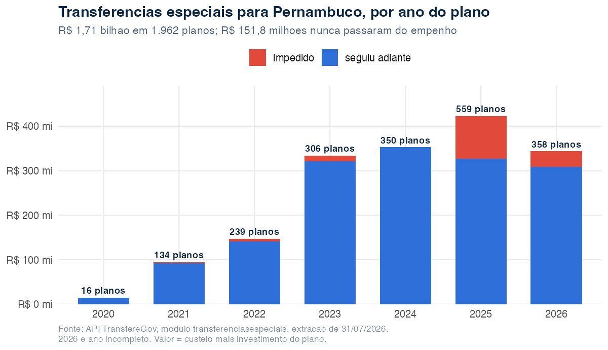
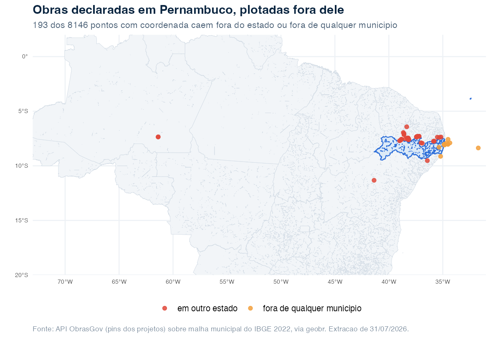

O caminho de 1,7 bilhão até Pernambuco — e os 151,8 milhões que pararam no meio
Source:vignettes/articles/investimentos-pernambuco.Rmd
investimentos-pernambuco.RmdUm em cada quatro planos de transferência especial de 2025 foi barrado. Dois terços deles, porque o próprio governo não concluiu a análise no prazo.
Sobre esta análise. Os números vêm de extrações feitas em 3 de agosto de 2026 da API de dados abertos do TransfereGov, com o pacote transferegovr. O código está reproduzido ao longo do texto. Os dados são atualizados diariamente; refazer a extração em outra data produzirá números diferentes.
Transferência especial é o que a imprensa apelidou de “emenda Pix”: dinheiro que a Emenda Constitucional 105/2019 permitiu repassar direto da União para estados e municípios, sem convênio e sem prestação de contas ao ministério repassador. O ente recebe e decide.
O que quase nunca se diz sobre esse desenho é que ele deixou um rastro administrativo minucioso. Cada etapa — o plano, o empenho, o documento hábil, a ordem bancária — vira uma linha numa tabela pública. Dá para acompanhar cada real do anúncio ao crédito em conta. Este texto faz isso para Pernambuco.
A trilha
library(transferegovr)
library(dplyr)
# O plano de ação não carrega a UF: ela vive no beneficiário.
beneficiarios <- tg_get("especiais", "beneficiarios_especiais", .limit = Inf)
pe <- beneficiarios |> filter(uf_beneficiario == "PE")
nrow(pe)
#> [1] 184
planos <- tg_get("especiais", "planos_acao_especiais", .limit = Inf) |>
semi_join(pe, by = "id_beneficiario") |>
mutate(
valor = coalesce(valor_custeio_plano_acao, 0) +
coalesce(valor_investimento_plano_acao, 0)
)
nrow(planos)
#> [1] 1962
sum(planos$valor) / 1e6
#> [1] 1709.61.962 planos de ação, R$ 1,71 bilhão, entre 2020 e julho de 2026. Vão para 184 beneficiários — 183 municípios e o Estado de Pernambuco — indicados por 42 parlamentares. Do total, 88% é investimento e 12% custeio.
![A trilha do dinheiro nas transferências especiais em Pernambuco, em cinco etapas: emenda parlamentar de 42 parlamentares; plano de ação, 1.962 planos e R$ 1,71 bilhão na tabela planos_acao_especiais; empenho, 2.111 empenhos e R$ 1,71 bilhão em empenhos_especiais; documento hábil, 2.030 documentos e R$ 1,56 bilhão em documentos_habeis_especiais; ordem de pagamento e ordem bancária, 1.932 ordens todas emitidas; e a conta do beneficiário. Entre empenho e documento hábil, um desvio marca 204 planos impedidos, 207 empenhos e R$ 151,8 milhões que não seguem adiante.](figures/trilha-do-dinheiro.svg)
O encaixe é exato, e vale reparar nele: R$ 1.709,6 milhões empenhados menos R$ 1.557,9 milhões em documentos hábeis dão R$ 151,8 milhões — precisamente o valor dos planos impedidos. O dinheiro não evapora entre etapas. Ele para num ponto identificável, e o sistema registra qual.
Isso é mais raro do que parece em dado público brasileiro, e merece ser dito antes das críticas.
O ritmo

De R$ 14,7 milhões em 2020 para R$ 423 milhões em 2025 — vinte e nove vezes em cinco anos. E 2026, com o ano pela metade, já passou de R$ 343 milhões. A modalidade deixou de ser marginal.
A faixa vermelha é o assunto do próximo trecho.
Onde trava
planos |>
count(situacao_plano_acao, wt = valor / 1e6, name = "milhoes")
#> # A tibble: 3 × 2
#> situacao_plano_acao milhoes
#> <chr> <dbl>
#> 1 CIENTE 1557.9
#> 2 IMPEDIDO 128.7
#> 3 Impedido por Rejeição do Plano de Trabalho 23.1204 planos estão impedidos, somando R$ 151,8 milhões. Todos foram empenhados — o dinheiro chegou a ser reservado no orçamento — e nenhum gerou documento hábil. Ficam num limbo: comprometidos e parados.
E não estão espalhados no tempo:
| Ano | Planos | Impedidos | % | R$ mi travados |
|---|---|---|---|---|
| 2020 | 16 | 0 | 0,0% | 0,0 |
| 2021 | 134 | 4 | 3,0% | 2,6 |
| 2022 | 239 | 9 | 3,8% | 5,8 |
| 2023 | 306 | 8 | 2,6% | 12,4 |
| 2024 | 350 | 0 | 0,0% | 0,0 |
| 2025 | 559 | 141 | 25,2% | 96,4 |
| 2026 | 358 | 42 | 11,7% | 34,6 |
Em 2025, um em cada quatro planos foi impedido. Nos quatro anos anteriores o índice nunca passou de 3,8%, e 2024 fechou com zero.
O motivo declarado é o que dá o tom:
planos |>
filter(!is.na(motivo_impedimento_plano_acao)) |>
count(motivo_impedimento_plano_acao, sort = TRUE)
#> 1 "Impedido por falta de análise conclusiva no prazo estabelecido." 91
#> 2 "Conforme Lei Complementar n° 210/2024, Artigo 10, Inciso X; …" 23
#> 3 "Impedido por Rejeição do Plano de Trabalho" 21
#> 4 "Impedimento por falta de complementação/ajuste do plano de trabalho…" 11
#> 5 "Conforme Lei Complementar n° 210/2024, … (não apresentação de …)" 6
#> 6 "Impedido por Restrição Técnica - inobservância da aplicação mínima…" 6As duas primeiras linhas e a quinta são a mesma norma em redações diferentes; somadas, a Lei Complementar 210/2024 responde por 29 casos.
Noventa e três dos 141 impedimentos de 2025 — dois terços — são falta de análise conclusiva no prazo. Não é o município que errou o formulário, não é restrição técnica, não é rejeição de mérito. É o prazo de análise vencendo sem que a análise saísse.
Vale a cautela: os planos de 2025 e 2026 são os mais recentes, e é natural que concentrem pendências que o tempo resolveria. Mas “falta de análise conclusiva no prazo” não é pendência aberta — é prazo esgotado, com efeito jurídico de impedimento. E a diferença entre 2024, com zero, e 2025, com 141, é grande demais para ser só maturação. A Lei Complementar 210/2024, citada em 29 dos casos, mudou as regras nesse intervalo e é a hipótese mais óbvia a investigar.
Do ponto de vista de quem gere um município de Pernambuco, o efeito é concreto: R$ 96,4 milhões que constavam como recurso disponível em 2025 não viraram documento hábil, e a razão registrada não é nada que a prefeitura pudesse ter feito diferente.
Quem recebe, quem indica
planos |>
left_join(pe, by = "id_beneficiario") |>
group_by(nome_beneficiario) |>
summarise(planos = n(), milhoes = round(sum(valor) / 1e6, 1)) |>
arrange(desc(milhoes))
#> # A tibble: 184 × 3
#> nome_beneficiario planos milhoes
#> <chr> <int> <dbl>
#> 1 MUNICIPIO DE SAO CAITANO 28 57.5
#> 2 MUNICIPIO DO BOM JARDIM 46 52.5
#> 3 MUNICIPIO DE BREJINHO 36 44.7
#> 4 ESTADO DE PERNAMBUCO 26 38.0
#> 5 MUNICIPIO DE PAUDALHO 19 29.2
#> # ℹ 179 more rowsSão Caitano é o maior destino da modalidade no estado, à frente do próprio Estado de Pernambuco. Não há nada de irregular nisso — a transferência especial é, por desenho, instrumento de emenda individual, e emendas individuais seguem a base de quem as propõe, não o mapa das carências. O dado apenas torna esse desenho visível.
A tabela guarda o autor de cada emenda, o que permite a leitura complementar:
planos |>
group_by(nome_parlamentar_emenda_plano_acao) |>
summarise(planos = n(), milhoes = round(sum(valor) / 1e6, 1)) |>
arrange(desc(milhoes))
#> 1 André Ferreira 119 95.1
#> 2 Carlos Veras 118 80.7
#> 3 Felipe Carreras 53 80.7
#> 4 Humberto Costa 163 79.1
#> 5 Renildo Calheiros 65 76.0Quarenta e dois parlamentares, nenhum plano sem autor informado. A dispersão é notável: o primeiro colocado responde por 5,6% do total. Não é um instrumento capturado por poucos.
A outra porta: fundo a fundo
Transferência especial não é a única via. O módulo
fundoafundo cobre repasses de fundo federal para fundo
estadual ou municipal — saúde, assistência social, educação:
# Aqui a UF é parâmetro do endpoint, então o filtro roda no servidor.
tg_get("fundoafundo", "planos_acao",
uf_ente_recebedor_plano_acao = "PE", .limit = Inf) |>
summarise(planos = n(),
milhoes = sum(valor_total_plano_acao, na.rm = TRUE) / 1e6)
#> # A tibble: 1 × 2
#> planos milhoes
#> <int> <dbl>
#> 1 868 1792.868 planos, R$ 1,79 bilhão — praticamente o mesmo volume das transferências especiais, por um caminho institucional inteiramente diferente, com fundo constituído, conselho e prestação de contas setorial. Um município recebe pelas duas portas ao mesmo tempo, e nenhum dos dois sistemas mostra a outra metade.
Aqui a qualidade do cadastro é exemplar. Testamos a coerência entre a UF declarada e o código IBGE do município, cujos dois primeiros dígitos são o código do estado:
uf_do_codigo <- c("26" = "PE", "25" = "PB", "27" = "AL", "29" = "BA") # etc.
ff <- tg_get("fundoafundo", "planos_acao", .limit = Inf)
ff |>
filter(!is.na(uf_ente_recebedor_plano_acao),
!is.na(codigo_ibge_municipio_ente_recebedor_plano_acao)) |>
mutate(
codigo = sprintf("%07.0f", codigo_ibge_municipio_ente_recebedor_plano_acao),
uf_ibge = uf_do_codigo[substr(codigo, 1, 2)],
coerente = uf_ente_recebedor_plano_acao == uf_ibge
) |>
count(coerente)
#> # A tibble: 1 × 2
#> coerente n
#> <lgl> <int>
#> 1 TRUE 25971Zero contradições em 25.971 planos, em todo o país. Nenhum prefixo inválido, nenhum código IBGE com dois nomes de município diferentes.
O que o TransfereGov não diz
Há uma pergunta que nenhuma das tabelas acima responde: onde a obra está.
O TransfereGov registra qual ente recebe — informação administrativa, validada contra uma tabela fechada, quase impossível de contradizer. Não registra coordenada. Para isso é preciso o outro cadastro federal, o ObrasGov, que desde 2021 aceita latitude e longitude. Os dois não têm chave comum: o que os liga é o território.
E ali a história é outra. Dos 5.477 projetos com Pernambuco como UF principal, 98,9% têm ponto — adesão alta. Mas ao testar cada ponto contra a malha municipal do IBGE:

141 pontos caem em outro estado — 130 na Paraíba, o que a divisa densa explica, mas também dois no Amazonas: um projeto de estradas vicinais declarado em Pernambuco tem ponto em Manicoré, a 2.643 km. Outros 52 caem no mar, a maioria a menos de 2 km da costa, mas um a 346 km, em obra marcada como em execução.
A manchete tentadora seria “2,2% dos pontos estão errados” — a proporção que cai fora de todo município declarado. Ela não sobrevive à distância: 39 dos 54 projetos afetados estão a menos de um quilômetro da divisa, o que é resolução de polígono, não obra no lugar errado. O deslocamento real são 15 projetos, 0,3%.
Vale registrar o que também não é erro: sete pontos que um teste ingênuo acusaria caem em Fernando de Noronha, a 361 km do continente. O arquipélago é Pernambuco, e os pontos estão certos.
O contraste é instrutivo, mas a lição não é “um é melhor que o outro”. O TransfereGov não pode errar a localização porque não pede o dado que erra. O ObrasGov, ao aceitar coordenada, assumiu o risco de estar visivelmente errado — e é por isso que dá para escrever este parágrafo sobre ele. Cadastro que não pode ser contestado não é cadastro melhor; é cadastro que pede menos.
O que um gestor faz com isso
Três coisas, todas baratas:
-
Acompanhar o prazo de análise, não só o de
execução. Os R$ 96,4 milhões travados em 2025 não dependeram de
nenhum município. Um alerta sobre planos com análise próxima do
vencimento é uma consulta a
planos_acao_especiaisfiltrando porsituacao_plano_acao. - Ler as duas portas juntas. Nenhum sistema mostra quanto um município recebe no total. O código IBGE permite somar transferência especial e fundo a fundo, e essa soma é o número que um secretário de planejamento precisa.
-
Validar coordenada contra município no cadastro. Do
lado do ObrasGov, os 15 projetos genuinamente deslocados seriam barrados
por um
st_within— a mesma checagem que roda em segundos aqui.
Limites desta análise
-
Recorte. Transferências especiais cujo beneficiário
tem
uf_beneficiario = "PE"e planos fundo a fundo com ente recebedor em PE. Recursos que chegam ao estado por outras vias — TED, convênios do SICONV, execução direta federal — ficam de fora. O TED, aliás, não é coberto pelo pacote: o governo não o publicou na API pública. - “Impedido” é situação corrente, não sentença. Um plano impedido em julho de 2026 pode ser desimpedido depois. O que os dados sustentam é a fotografia da data de extração.
- A causa do salto de 2025 não está provada. A concentração é factual; a Lei Complementar 210/2024 é hipótese, sugerida por aparecer entre os motivos.
- Valor do plano não é valor pago. É custeio mais investimento declarados. O pagamento efetivo está na ordem bancária, e nem toda ordem bancária foi conciliada aqui.
- A parte do ObrasGov é resumo de uma análise mais longa; a malha municipal usada é a de 2022.
Reprodução
Ambas as APIs são públicas e sem autenticação. A extração completa baixa cerca de 2 mil planos, 2 mil empenhos e 26 mil planos fundo a fundo — poucos minutos, com o limite de requisições que o pacote já respeita sozinho.
Uma ressalva prática: estas APIs não têm operador “está em”. A trilha
do empenho ao documento hábil não é feita por filtro, e sim baixando a
tabela e cruzando em R com semi_join() — que é o que o
código acima faz. Como o teto de página é 200 linhas,
planos_acao_especiais (57.827 linhas no país) leva cerca de
290 requisições, e vale deixar o cache ligado entre as etapas.